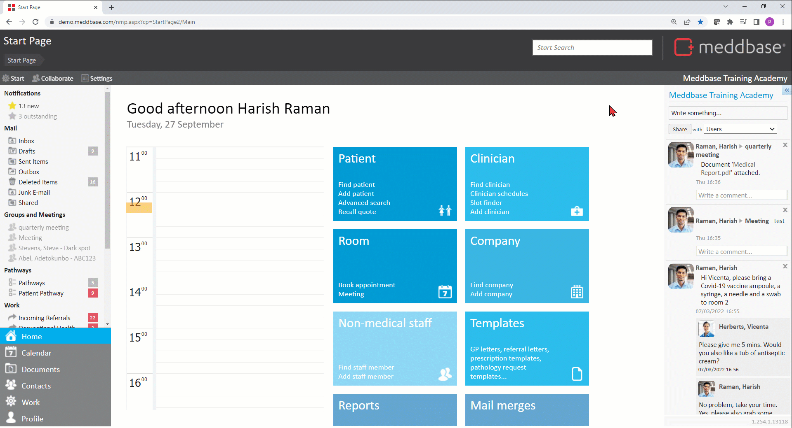

Meddbase System Administrators/Superusers with access to the Admin section of the Start Page can view and modify a host of configuration options and settings controlling the behaviour and workflows in the application. Many of the above are configured/controlled via the Configuration section*.
This article is a part of a collection of articles on the Admin > Configuration section. Click here for an overview article.
Many of the settings described in this series have default values when a Meddbase chamber is first created and do not need changing.
* Access to the Admin section and the ability to add/change configuration and settings are determined by the User's Role Group membership and Security Policy permissions granted. Please refer to the below articles for more details.
Understanding Role Groups - Definitions, related workflows and behaviours
This article is an overview of the Admin > Configuration > Documents section and the available settings within.
To access the Configuration section, a permitted User should:-

The below table explains each setting, field and/or tick box in detail:
| Setting | Description/effect |
|---|---|
| Allowed file extensions for upload | This field allows adding file extensions* that users will be able to upload to their Meddbase chamber. *Please note! Adding an extension from the Disallowed file extensions list here will not result in that extension being allowed, e.g. uploading exe files will never be allowed |
| Disallowed file extensions for upload | This is a read-only field, listing file extension users are not allowed to upload to Meddbase. |
| Keep document open for at least (minutes) | This field refers to the feature that tracks who is currently editing a patient/company document. Once a user 'takes' a document by opening it (or explicitly takes it from another user), it stays allocated to that user for the time specified here, even if the user doesn't save any updates. Each time they do save an update, the clock resets. |
| Downloading documents | This dropdown allows selecting the default option for downloading documents in the chamber:
Note! The Document Manager securely opens attachments and re-attaches them once you have finished editing them. Alsoit wipes the file from your local computer.
|
| Document preview | |
| Patient documents | This dropdown allows selecting which document type* will be previewed when a user visits a Patient's document page *Please note! The most recent document (as per date and time it was uploaded/created from template) belonging to the selected type will be previewed |
| Company documents | This dropdown allows selecting which document type will be previewed when a user visits a Company's document page |
| Staff documents | This dropdown allows selecting which document type will be previewed when a user visits the Non-Medical Staff Member's document page |
| Clinician documents | This dropdown allows selecting which document type will be previewed when a user visits a Clinician's document page |
| Medical history | |
| Show PDF previews | This option when ticked, enables a full preview of PDF documents in patient's Medical History, as opposed to an extract of the text or just the file name. |